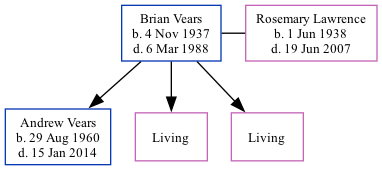

Brian Edward Walne Vears 1937 - 1988
[ Home ] | [ Calendar ] | [ Surnames Index ] | [ Family History ]Brian Vears, the husband of Rosemary Irene Peggy Lawrence (the first cousin once-removed on the mother's side of Nigel Horne), was born in Dagenham, London, England on Nov 4, 19371,2,3 and married Rosemary (with whom he had 3 children: Andrew Philip, Wendy S and Yvonne Rosemary, along with 2 surviving children) in Dover, Kent, England around May 19594. On Sep 29, 1939, he lived on 111 Boyne Road, Dagenham, Essex, England1.
He died on Mar 6, 1988 in Deal, Kent3.
Children
- Andrew Philip was born on Aug 29, 1960
Citations
- 1939 Register - Findmypast (was recorded at this address)
- England & Wales births 1837-2006 - Findmypast
- England & Wales deaths 1837-2007 - Findmypast
- England & Wales Marriages 1837-2005 - Findmypast
Media
England & Wales births 1837-2006 - BMD/B/1937/4/AZ/001137/041
England & Wales marriages 1837-2005 - BMD/M/1959/2/AZ/001093/001
England & Wales deaths 1837-2007 - BMD/D/1988/3/77032291
1939 Register - TNA-R39-1082-1082E-012-19
Family Tree
Generated by Ged2Site. Last updated on Jul 20, 2025